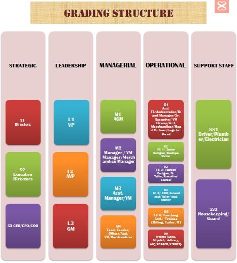

<ion-header>
  <ion-toolbar>
    <ion-buttons slot="start">
      <ion-back-button defaultHref="/" icon="arrow-back"></ion-back-button>
    </ion-buttons>
    <ion-title>Organisation Chart</ion-title>
  </ion-toolbar>
</ion-header>

<ion-content padding>
  
</ion-content>
